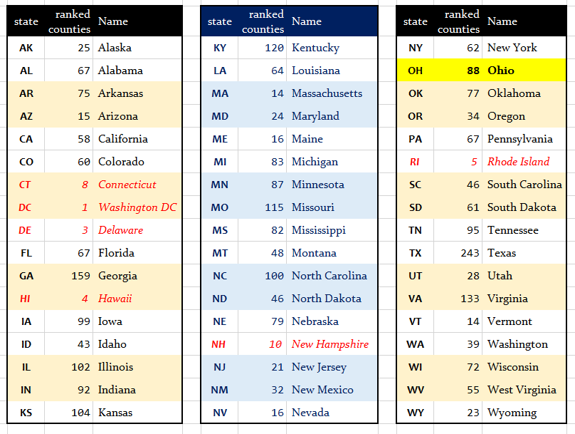

Project A Data
This page was last updated: 2021-10-18 11:12:45.
What Data Will I Use?
The data set for Project A is now available. The data are the 2021 version of the analytic data from County Health Rankings. In much of what follows, we will abbreviate County Health Rankings as CHR. You have already seen some versions of these data in Labs 02 and 03, but you’ll need to generate a new data set of your own for Project A.
The data are gathered at the County Health Rankings Data & Documentation site.
The key links for you are provided as part of the National Data & Documentation section of that site for the 2021 County Health Rankings. Do not use data from previous editions of the CHR, and do not use the trends data available on their website for this project.
Specifically, you’ll need three files:
- the 2021 CHR CSV Analytic Data (a .csv file)
- the 2021 CHR Analytic Data Documentation file (PDF), and
- the 2021 Data Dictionary (PDF)
These files are also available in the data folder for Project A on Github.
Developing the Data: Overview
Cleaning the data will be a time-consuming effort, but the good news is that you can begin it immediately. Before you complete any of the required analyses in R, you’ll need to complete the following steps.
- Ingest the data into R. You’ll need to remove the top row from the .csv, and you can do that either inside or outside of R.
- Select variables (at this stage, there will be 4 required variables, plus 5 additional variables you select, for a total of 9) that you actually need to use and rename them into useful formats instead of the default names provided by CHR. Save the result in your analytic tibble, which should be called chr_2021.
- Filter your chr_2021 file so that it contains only the subset of observations (counties) that you actually want to study. Note that each of these counties will have to have a
county_rankedvalue of 1. You will be working with a subset of the availablestates, which should include the 88 counties of Ohio, plus counties from 3-5 other states you will select.
- Make some transformations to obtain categorical versions (factors) of two of your selected variables and add them to your chr_2021 tibble. Retain the original versions of those two variables, too, so that you wind up with 11 variables in total.
- Your final chr_2021 tibble will therefore contain 200-400 rows (counties) and 11 variables. Eventually, you’ll save this tibble as an R data frame.
Data Development Task List
Here are some of the necessary details for each step of this process. Please refer to Dr. Love’s materials in the Project A Examples and Tips section for more help.
Task A. Ingest the CHR Data into a tibble
- Remove the first row of the available
.csvfile to leave the second row as the top row before ingesting the data into R. You could do this in Excel or perhaps Google Sheets, and then resave a new version of the file without this top row as a .csv before ingesting into R. A cleaner approach would be to remove this row in R when ingesting the data, by using theskip = 1command within yourread_csv()as shown below.
data_url <- "https://www.countyhealthrankings.org/sites/default/files/media/document/analytic_data2021.csv"
chr_2021_raw <- read_csv(data_url, skip = 1)- Read the resulting
.csvfile into R, and call the resulting tibble chr_2021_raw. Be sure that this goes as smoothly as possible. You should at this point have 3194 rows and 690 columns. At this stage, you may also want to restrict the data set to only include the 3081 rows which have “county_ranked” values of 1, since the other rows will not be used by us in this project.
Task B. Identify a set of 4-6 states, containing 200-400 counties.
Your selection must include:
- the 88 counties of Ohio, and
- all of the counties in a subset of 3-5 additional states in the US
The number of counties (which have county_ranked values of 1) associated with each state (specified using its two-letter postal abbreviation code) is listed below, for your convenience.
- Do not include any state (including the District of Columbia, Connecticut, Delaware, Hawaii, New Hampshire and Rhode Island) with fewer than 12 counties. Those entities are shown in red below.
- Note that the original version of this image described the 2020 data, which were a little different in the counts of ranked counties for ID, ND, NE, NV, OR and TX.

So, including OH, you will need a total of 200-400 counties, from 4-6 states. For example,
- one possible combination would be the states of
TX(243 counties),AZ(15 counties) andNM(32 counties) in addition toOH(88 counties), which would yield 378 counties in 4 states - another combination would be the states of
WA(39 counties),WI(72 counties),WV(55 counties) andWY(23 counties) to joinOH(88 counties) yielding 277 counties in 5 states - and yet another would be
PA(67),NY(62),NJ(21),MD(24) andVA(133) in addition toOH(88) yielding 395 counties in 6 states
Notes
- Choose your subset of states with the knowledge in mind that some variables in the CHR data are not available for some counties, and that each state you select must have more than 12 counties.
- You should have some reason for selecting the states that you do, and you will need to describe that reason in a complete sentence or two in your proposal and your final report.
- Since we’ve studied five Midwest states (and 437 counties) in Lab 2, we want you to look at a minimum of one state not included in that list, so your final selection of states (besides Ohio) must include at least one state other than Indiana, Illinois, Michigan and Wisconsin.
- Don’t forget to filter the rows of the tibble so that only those rows with
county_rankedof 1 are included. Otherwise, your counts won’t match the image above.
Task C. Identify Your Variables
Here you will need to identify variables from the data for your selected sample of counties that will allow you to create a tibble that includes:
- the five-digit fips code for the county, which will be a convenient ID variable
- the name of the county, which will be useful for labeling and identifying the counties
- the
state, which will be a multi-categorical (with 4-6 categories) variable - the
county_rankedvariable, which tells us whether the row should be included in our data (so you’ll want to eventually filter down to the rows wherecounty_ranked == 1) - and a total of five variables selected from the 79 variables in the CHR data set that are listed as
vXXX_rawvalue(note: to select the entire group of 79 variables, you might tryselect(ends_with("rawvalue"))as part of a pipe of the data.)
Your code to look at all 79 variables, plus the other required elements, might look something like this:
chr_2021_raw2 <- chr_2021_raw %>%
select(fipscode, state, county, county_ranked,
ends_with("rawvalue"))Note that the resulting chr_2021_raw2 tibble would have 3,194 rows and 83 columns, and you’d still need to reduce the number of variables (as described below), and filter down to the rows with county_ranked equal to 1.)
The 79 variables you must select 5 from
The 2021 CHR Analytic Data Documentation file (PDF), and 2021 Data Dictionary PDF files are crucial here, as those are the ones that explain what the available variables mean, and how they should be labeled.
You must select your five variables from these 79 variables in the raw (.csv) data file. We show them here in the order in which they appear in the raw file. The listing “v001” in this table actually refers to the variable named “v001_rawvalue”.
“v001”, “v002”, “v036”, “v042”, “v037”, “v009”, “v011”, “v133”, “v070”, “v132”, “v049”, “v134”, “v045”, “v014”, “v085”, “v004”, “v088”, “v062”, “v005”, “v050”, “v155”, “v168”, “v069”, “v023”, “v024”, “v044”, “v082”, “v140”, “v043”, “v135”, “v125”, “v124”, “v136”, “v067”, “v137”, “v147”, “v127”, “v128”, “v129”, “v144”, “v145”, “v060”, “v061”, “v139”, “v083”, “v138”, “v039”, “v143”, “v003”, “v122”, “v131”, “v021”, “v149”, “v159”, “v160”, “v063”, “v065”, “v141”, “v142”, “v015”, “v161”, “v148”, “v158”, “v156”, “v153”, “v154”, “v166”, “v051”, “v052”, “v053”, “v054”, “v055”, “v081”, “v080”, “v056”, “v126”, “v059”, “v057”, “v058”
For example, v001_rawvalue shows the raw values for the premature death measure. If you select this variable, it is up to you to use the documentation in the two PDF files I have linked to, as well as the information on the County Health Rankings website, to get a reasonable understanding of what the variable measures, and how it was collected.
Some important notes
Be sure to read this entire Data page (especially the material on Cleaning Your Variables) before selecting your variables, so you are aware of some features of the data we disclose below.
The five variables you select must be five different variables selected from the 79 variables in the CHR data set that are listed as
vXXX_rawvalue. Some of the variables in that set of 79 are better choices than others, based on the criteria in the next few notes.Each of the variables you select should be of some actual interest to you on its own, in terms of either providing a health outcome of interest, or potentially providing useful information about a feature of the county that might relate to that health outcome. Your five selected quantitative variables, selected by you from the 79 available “raw value” CHR variables, will need be treated as follows:
- variable 1 will be treated as quantitative, and as an outcome of interest
- two others (variables 2 and 3) will also be treated as quantitative predictors of interest for variable 1
- variable 4 will be categorized into 2 mutually exclusive and collectively exhaustive levels to create a binary categorical variable of interest in predicting variable 1 (this is a terrible idea in practical work.)
- Note that exactly one of the variables in the data (
v124about drinking water violations) is already a binary (1 = Yes, 0 = No) variable (all other variables are quantitative.) You are permitted to usev124as your variable 4, if you like.v124may not be used as anything other than variable 4 in your work.
- Note that exactly one of the variables in the data (
- variable 5 will be categorized into 3-5 mutually exclusive and collectively exhaustive levels to create a multi-categorical variable of interest in predicting variable 1 (this is almost as bad as what we’ll do to variable 4 in practical work)
- the
statewill serve as another multi-categorical (with 4-6 categories) predictor of variable 1, so this will also be part of your tibble
- Each of the five variables you select must have data for at least 75% of the counties in each state you plan to study. This is something you will have to check on, in R, and you’ll have to present the code, and demonstrate with complete English sentences that you’ve verified this to be true for each of your five selections. The variables listed below are those with more than 10% missing values across all ranked counties. While you are welcome to use any of these variables, you may want to look elsewhere to avoid problems with the “minimum 75% complete data” requirement.
| Variable | Description | % missing |
|---|---|---|
v129_rawvalue |
infant mortality | 60.1 |
v015_rawvalue |
homicides | 57.8 |
v149_rawvalue |
disconnected youth | 57.6 |
v138_rawvalue |
drug overdose deaths | 43.6 |
v158_rawvalue |
juvenile arrests | 41.9 |
v128_rawvalue |
child mortality | 38.8 |
v141_rawvalue |
residential segregation | 32.2 |
v148_rawvalue |
firearm fatalities | 27.3 |
v061_rawvalue |
HIV prevalence | 22.5 |
v161_rawvalue |
suicides | 22.2 |
v021_rawvalue |
High School graduation | 16.1 |
v160_rawvalue |
Math scores | 12.8 |
v039_rawvalue |
Motor vehicle crash deaths | 12.7 |
Note that the descriptions in the table above (and in the tables below) associated with each variable are available as the first (deleted) row in the .csv file, and are also specified in the 2021 CHR Analytic Data Documentation file.
Across your complete set of 4-6 selected states, the raw versions of each of your five selected variables must have at least 10 distinct non-missing values. Again, you’ll need to show R code to do this checking, and demonstrate with complete English sentences that you have checked this to be true.
Cleaning Your Variables
Check your five variables on the lists below. You should find all five of your selected variables on the list somewhere.
- If you plan to use the variable as quantitative, do what is suggested below as part of your data development work, and use that version in your codebook.
- If you plan to use the variable as a categorical predictor, we still suggest you make the appropriate change to the original quantitative version as indicated below.
The Binary Category
v124 is about Drinking Water Violations, is the only binary (1 = Yes, 0 = No) variable in the data. (all other variables are quantitative.) You are permitted to use v124 as your variable 4, if you like. v124 may not be used as anything other than variable 4 in your work.
Ratios That Need Converting
These variables are specified as providers per population in the raw data file. You will want to take the reciprocal (1/raw value) to rescale the results in terms of population per provider, which should be much more interpretable.
- You’ll note that this rescaled ratio is also provided in the raw file if you want it, for example, for primary care physicians,
v004_rawvalueis providers per population, butv004_other_data_1is the ratio of population (residents) per provider. - Note that after rescaling by taking the reciprocal, you may see some counties with infinite ratios, which should then be changed to missing values.
| Code | Variable Description |
|---|---|
| v004 | Primary care physicians |
| v062 | Mental health providers |
| v088 | Dentists |
| v131 | Other primary care providers (not recommended) |
- We don’t recommend using variable
v131in Project A because of the large number of counties with very small numbers of these providers listed.
Variables that should be rescaled
| Code | Variable Description | What to do? |
|---|---|---|
| v001 | Premature death | Divide by 100 to represent losses per 1000 population |
| v051 | Population | Either use log10(population), or divide population by 1000 to represent population in thousands. |
| v061 | HIV prevalence | Divide by 100 to represent cases per 1000 population (caution: substantial missing data) |
| v063 | Median household income | Divide by 1000 to represent in thousands of dollars |
Variables that are Proportions should be converted to Percentages
Each of the variables listed below are proportions (between 0 and 1). Before you use them in any analyses, please multiply them by 100 in your data development (using mutate) to turn their values into percentages (between 0 and 100) and this will seriously ease the interpretation of slopes and transformations for these variables.
| Code | Variable Description |
|---|---|
| v002 | Poor or fair health |
| v003 | Uninsured adults (pick v003 or v085, but not both) |
| v009 | Adult smoking |
| v011 | Adult obesity |
| v021 | High school graduation (pick v021 or v168, but not both, see note) |
| v023 | Unemployment |
| v024 | Children in poverty |
| v037 | Low birthweight |
| v049 | Excessive drinking |
| v050 | Mammography screening |
| v052 | Proportion below 18 years of age |
| v053 | Proportion 65 and older |
| v054 | Proportion Non-Hispanic Black (see note below) |
| v055 | Proportion American Indian and Alaska Native (see note below) |
| v056 | Proportion Hispanic (see note below) |
| v057 | Proportion Females |
| v058 | Proportion Rural |
| v059 | Proportion not proficient in English |
| v060 | Diabetes prevalence |
| v065 | Children eligible for free or reduced price lunch |
| v067 | Driving alone to work |
| v069 | Some college |
| v070 | Physical inactivity |
| v080 | Proportion Native Hawaiian/Other Pacific Islander (see note below) |
| v081 | Proportion Asian (see note below) |
| v082 | Children in single-parent households |
| v083 | Limited access to healthy foods |
| v085 | Uninsured (pick v003 or v085, but not both) |
| v122 | Uninsured children (pick v085 or v122, but not both) |
| v126 | Proportion Non-Hispanic White (see note below) |
| v132 | Access to exercise opportunities |
| v134 | Proportion of driving deaths with alcohol involvement |
| v136 | Severe housing problems |
| v137 | Long commute - driving alone |
| v139 | Food insecurity |
| v143 | Insufficient sleep |
| v144 | Frequent physical distress (pick v036 or v144, but not both) |
| v145 | Frequent mental distress (pick v042 or v145, but not both) |
| v149 | Disconnected youth (caution: lots of missing data) |
| v153 | Homeownership |
| v154 | Severe housing cost burden |
| v155 | Flu vaccinations |
| v166 | Broadband access |
| v168 | High school completion (pick v021 or v168, but not both, see note) |
- If you are interested in studying race and ethnicity and their impact on a health outcome, these data aren’t particularly well suited to a detailed look. Instead we suggest using
v126to incorporate this dimension as a predictor (or its inverse, 1 -v126), rather than including any of the other race/ethnicity variables, specificallyv053,v054,v055,v056,v080, orv081. This is because there’s more variation in thev126data across the reported counties. Again, a serious look at the impact of race/ethnicity is beyond the scope of Project A. - Note that variable
v021has more missing data thanv168, should you be trying to choose between them.
Variables that should be OK as is
The variables listed below should be fine as they are. Most of them are ratios, although a few are averages or indexes. The main issue for these variables is correctly specifying the units of measurement (note that the indexes don’t have units.)
| Code | Variable Description |
|---|---|
| v005 | Preventable hospital stays |
| v014 | Teen births |
| v015 | Homicide rate (caution: lots of missing data) |
| v036 | Poor physical health days (pick v036 or v144, but not both) |
| v039 | Motor vehicle crash deaths (caution: substantial missing data) |
| v042 | Poor mental health days (pick v042 or v145, but not both) |
| v043 | Violent crime |
| v044 | Income inequality |
| v045 | Sexually transmitted infections |
| v125 | Air pollution - particulate matter |
| v127 | Premature age-adjusted mortality |
| v128 | Child mortality (caution: lots of missing data) |
| v129 | Infant mortality (caution: lots of missing data) |
| v133 | Food environment index |
| v135 | Injury deaths |
| v138 | Drug overdose deaths (caution: lots of missing data) |
| v140 | Social associations |
| v141 | Residential segregation - Black/White (pick v141 or v142, see note) |
| v142 | Residential segregation - non-White/White (pick v141 or v142, see note) |
| v147 | Life expectancy |
| v148 | Firearm fatalities (caution: substantial missing data) |
| v156 | Traffic volume |
| v158 | Juvenile arrests (caution: lots of missing data) |
| v159 | Reading scores |
| v160 | Math scores (caution: substantial missing data) |
| v161 | Suicides (caution: substantial missing data) |
- Note that variable
v141has more missing data thanv142, should you be trying to choose between them.
Task D. Create Categorical Variables
As mentioned, you will need to provide code to categorize two of your variables. Specifically…
- variable 4 will be categorized into 2 mutually exclusive and collectively exhaustive levels to create a binary categorical variable of interest in predicting variable 1 (this is a terrible idea in practical work.)
- variable 5 will be categorized into 3-5 mutually exclusive and collectively exhaustive levels to create a multi-categorical variable of interest in predicting variable 1 (this is almost as bad as what we’ll do to variable 4 in practical work.)
Notes
- You will need to verify that all levels (categories) in each of your categorical variables contain at least 10 counties. Using
tabylis a good approach to check that this is true.
Task E. Create your Main Tibble
In your R Markdown file, you will need to present all code necessary to take the original .csv data file and wind up with your chr_2021 tibble so that we can run that code and get the same results you do.
Your main data set for analysis then should be gathered into a tibble called chr_2021 containing the following information:
- the identifying variables for each county, specifically:
fipscode= the five-digit fips code for the state and county,county= the name of the countystate= the postal abbreviation code for the state
- your three selected quantitative variables, one of whom is your outcome
- your binary categorical variable derived from your fourth selected variable
- your multi-categorical variable derived from your fifth selected variable
- the “original” quantitative versions of the two variables (4 and 5) that you later categorized (if you chose the drinking water violations variable for variable 4, then you don’t need to repeat it here.)
All of these variables should be renamed (and also have clean_names applied) so as to have descriptive and maximally helpful variable names.
- For example, if you have decided to use as a quantitative variable something like
v009_rawvalue, which is about adult smoking, you should rename the variablev009_rawvalueto adult_smoking in your tibble. - If
v009_rawvalue(about adult smoking) is to be one of your categorical variables, then you should include both the original quantitative value (renamedadult_smoking_raw) and your categorical variable that you’ll actually use in analyses, which should be namedadult_smoking_cat.
Notes
- After your cleaning is done, each row in your
chr_2021tibble should contain all of the counties within the 4-6 states you are studying, and no other counties should be included in your tibble. All rows of yourchr_2021tibble should be taken from those rows in the original data withcounty_rankedvalues of 1. - If data for some counties are missing in the raw data for one or more of your variables, then these data should be indicated as missing (using NA) in the tibble.
- There is no need to set a seed in this process, as you are not doing anything that involves selecting a random sample.
Task F. Provide a Codebook for Your Tibble
Next, you will provide a codebook as part of your R Markdown file (and HTML/PDF output) that specifies the name of each variable in your tibble and its definition. After you select your variables, use the County Health Rankings website’s 2021 Measures list, and in particular the linked information on that page for full descriptions, definitions and limitations of the variables you have selected.
Notes
Be sure to include a description for each of the 10 variables (3 required + 5 you select + 2 categorical versions you create) in your final tibble, not just the ones that you wind up using in your analyses.
Include a description of what the cutpoints are for the two categorical variables you create, and specify how those cutpoints were chosen.
Task G. Saving and Summarizing Your Tibble
Save the Tibble: You should provide code that saves your tibble as an R data set into your R Project, with the file name chr_2021_YOURNAME.Rds. If you like, you can store this
.Rdsfile in adatasubdirectory within your R Project.Print the Tibble: You will then prove that your tibble is in fact a tibble and not just a data frame by listing it, so that the first 10 rows are printed, and the columns are appropriately labeled.
Numerical Summaries: You will then demonstrate main numerical summaries from the tibble by running the following summaries.
Hmisc::describeon the whole tibble (all 10 variables: which is what you’ll do for the proposal in Lab 04).- In the project report, there are two additional requirements.
mosaic::favstatson each of your quantitative variables (so variables 1, 2, and 3 and the original versions of variables 4 and 5)janitor::tabylon your categorical variables 4 and 5 as well as onstate.